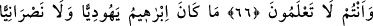

EHL-İ KİTAB’I TEVHÎDE DÂVET
64. (Rasûlüm!) de ki: Ey ehl-i kitap! Sizinle bizim aramızda müşterek olan bir
söze geliniz: Allah’dan başkasına tapmayalım; O’na hiçbir şeyi eş tutmayalım ve
Allah’ı bırakıp da kimimiz kimimizi ilâhlaştırmasın. Eğer onlar yine yüz
çevirirlerse, işte o zaman: Şâhid olun ki biz müslümanlarız! deyiniz.
65. Ey ehl-i kitap! İbrâhîm hakkında niçin çekişirsiniz? Halbuki Tevrat ve İncil,
kesinlikle ondan sonra indirildi. Siz hiç düşünmez misiniz?
66. İşte siz böyle kimselersiniz! Hadi hakkında bilgi sahibi olduğunuz konuda
tartıştınız; fakat bilgi sahibi olmadığınız konuda niçin tartışıyorsunuz! Oysa ki